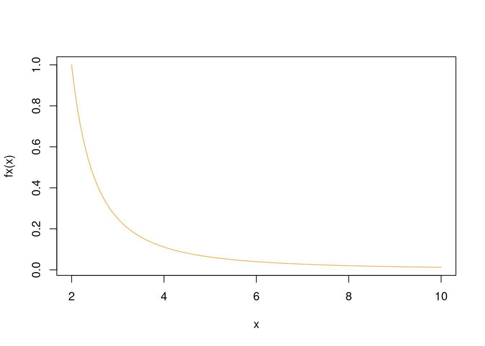
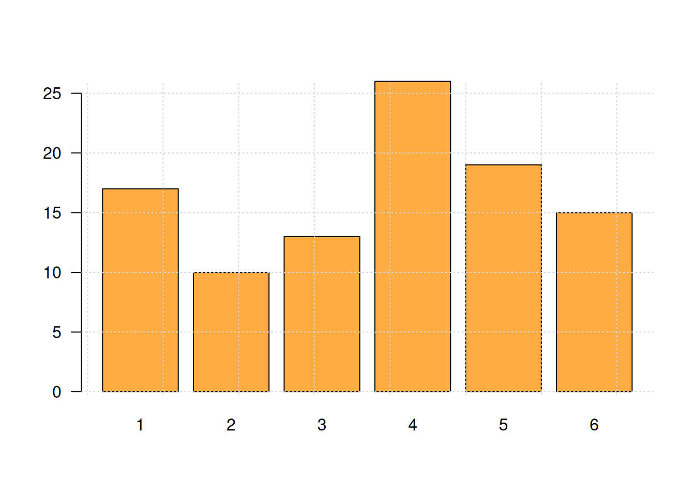
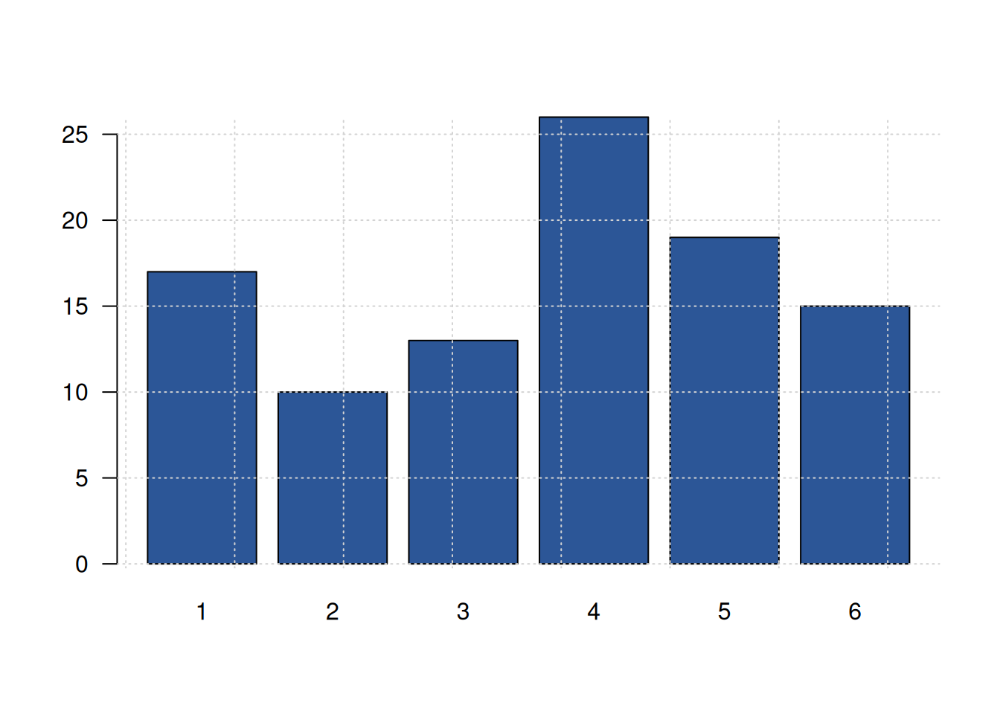

dgonzalez

INTRODUCCIÓN A

Que es R
Es un lenguaje para la computación estadística, utilizado para el procesamiento de información y generación de modelos estadísticos. Entre las principales caractarísticas estan:
Licencia (GNU GPL) abierta y gratis
Creciente popularidad en ciencia de datos
Multipalataforma (UNIX, Windows, MacOS)
Ross Ihaka y Robert Gentieman (U.Auckland - Nueva Zelanda) 1993
Lenguaje multiparadigma
Codigo construido en C y Fortran
Gran comunidad muy activa
Mas de 7000 paquetes

En el siguiente enlace se pueden obtener los archivos para su
instalación : https://www.r-project.org/
Podemos usar este lenguaje utilizando una terminal o mediante la IDE RStudio, la cual integra un conjunto de herramientas que facilitan el uso R a los usuarios

Esta interfaz esta conformada por varias ventana como se muestra en la siguiente imagen

- Fuente (Source) : Ventana donde se trabajan los script con código que se guardan para posterior utilización
- Consola (Console) : Ventana donde se pueden escribir comandos de manera directa
- Ambiente (Environment) : Ventana donde se pueden observar las varables y objetos creados
- Archivos (Files) : Ventana que muestra el directorio y los archivos en el que estamos trabajando
- Graficos (plots) : Ventana que presenta los gráficos construidos
- Paquetes (Packages) : Ventana que permite instalar los paquetes requeridos
- Ayudas (Help) : Ventana en la que podemos pedir ayuda sobre las sintaxis de funciones
En los siguientes enlaces se pueden descargar los programas, dependiendo el sistema operativo :
Bilbiografia recomendada:
A continuación se relacionan algunas ayudas para la iniciación
del lenguaje
Tipos de datos en R
vector
Arreglo unidimensional de valores, caracteres o cadenas
x=c(1,2,3,4,5) #<<
x[1] 1 2 3 4 5y=c("Muy regular", "Regular", "Bueno", "Muy bueno", "Excelente")
y[1] "Muy regular" "Regular" "Bueno" "Muy bueno" "Excelente" matriz
Arreglo bidimensional de valores
x=1:9
m=matrix(x,nrow=3) #<<
m [,1] [,2] [,3]
[1,] 1 4 7
[2,] 2 5 8
[3,] 3 6 9arrays
Arreglos multimensionales de valores. En el siguiente ejemplo se representa un arreglo de 3 matrices 3x3 que conformarian en 3D un cubo de datos
x=1:9
y=10:18
z=19:27
mn=array(c(x,y),dim=c(3,3,3)) #<<
mn, , 1
[,1] [,2] [,3]
[1,] 1 4 7
[2,] 2 5 8
[3,] 3 6 9
, , 2
[,1] [,2] [,3]
[1,] 10 13 16
[2,] 11 14 17
[3,] 12 15 18
, , 3
[,1] [,2] [,3]
[1,] 1 4 7
[2,] 2 5 8
[3,] 3 6 9factores
Vector de variables categóricas, por lo general se utilizan para dividir una base en subgrupos
x=c("rojo", "verde", "azul")
y=rep(x, times=4)
x[1] "rojo" "verde" "azul" y [1] "rojo" "verde" "azul" "rojo" "verde" "azul" "rojo" "verde" "azul"
[10] "rojo" "verde" "azul" listas
Colección de objetos cada uno de tipos diferentes. El objeto de esta clase guarda valores en diferentes formatos.
En el siguiente ejemplo se construye un objeto h que contiene varios elementos dentro de si, todos relacionados con un histograma
h=hist(rnorm(100,25,10)) #<<
h$breaks
h$counts
h$density
h$mids
h$xname
h$equidistdata.frames
Estructura de datos de dos dimensiones - filas y columnas - base de datos. En este caso se puede obtener un fila (data[1,] o una columna (data[,1], por separado o un elemento de la data directamente data[20,2].
data(iris) #<<
head(iris)
iris[1,]
iris[1,5]funciones
Para construir una función utilizamos la palabra function, entre parentesis los valores de entrada y entre corchetes la formula que conforma la función. Por ejemplo:
\[f(x)=\dfrac{1}{(x-1)^{2}} \]
fx=function(x){1/(x-1)^2} #<<
fx(100) # funcion evaluada en x=100[1] 0.0001020304En este caso la función es evaluada dentro de un otra función en la construcción de un gráfico
x=seq(from=2,to=10, by=0.01) # genera secuencia de numeros entre 2 y 10 con paso 0.01
plot(x, fx(x), type="l", col=c1) # genera grafica
El siguiente ejemplo construye una función para la realización de un gráfico. En este caso los valores de entrada estan conformados por un vector de datos y un color
y=sample(1:6,100, replace = T) # generacion de datos
# funcion definida para la construccion de graficos
grafica=function(x,color){
barplot(x,
col=color, las=1)
grid()
}
z=table(y) # generacion de tabla de datos
grafica(z,c1) # evalua la funcion en los datos z y colo rojo
w=round(prop.table(z)*100,2) # genera datos y constuye tabla en porcentaje
grafica(w,c6) # evalua la funcion con w y color azul
ts
Objeto para series de tiempo
Operadores en R
| Aritméticos | Comparativos | Lógicos | |||
|---|---|---|---|---|---|
| + | adición | < | menor que | !x | NO lógico |
| - | substracción | > | mayor que | x & y | Y lógico |
| * | multiplicación | <= | menor o igual que | x | y |
| / | división | >= | mayor o igual que | x or y | O exclusivo |
| ^ | potencia | == | igual | ||
| %% | módulo | != | diferente de | ||
| %/% | división enteros |
Instalación de paquetes en R
El lenguaje R esta conformado por miles de paquetes o Packages construidos por investigadores en diversos temas y área del conocimiento
Al instalar inicialmente R contiene una serie de funciones listas para ser utiliadas las que llamamos -base con el que R funciona de manera adecuada para dar respuesta a problemas básicos, sin embargo en algunos casos es necesario instalar paquetes adicionales, los cuales iremos anunciando en la medida que sean necesario.
Para instalar un paquete lo podemos hacer de dos formas :
- Utilizando la vengtana Packages ubicada en la parte inferior derecha de RStudio
- Digitando en la consola la función install.packages ()
install.packages("ggplot2")Paquetes más utilizados
Programación pipe
En R, el operador “pipe” (%>%) es una herramienta proporcionada por el paquete magrittr que permite encadenar una secuencia de funciones de manera más legible y fluida. Este operador toma el resultado de una expresión y lo pasa como argumento a la siguiente función, facilitando la lectura y escritura del código al estructurar las operaciones de izquierda a derecha.
Ejemplo 1
Supongamos que tenemos un vector de números y queremos calcular la media de sus valores absolutos. Sin usar el operador “pipe”, el código sería:
# programación convencional
x <- c(-2, -1, 0, 1, 2)
mean(abs(x))[1] 1.2Utilizando el operador “pipe”, el mismo cálculo se puede expresar de manera más clara:
library(magrittr)
x <- c(-2, -1, 0, 1, 2)
x %>%
abs() %>%
mean()
library(magrittr)
Adjuntando el paquete: 'magrittr'The following object is masked from 'package:purrr':
set_namesThe following object is masked from 'package:tidyr':
extractx <- c(-2, -1, 0, 1, 2)
x %>%
abs() %>%
mean()[1] 1.2Aquí, x se pasa a la función abs(), y el resultado de abs(x) se pasa a mean(). Esto mejora la legibilidad al evitar la anidación de funciones.
Ejemplo 2:
Utilizaremos el conjunto de datos mtcars, que viene incluido en R. Este conjunto contiene información sobre diferentes modelos de automóviles, incluyendo variables como el consumo de combustible (mpg), el número de cilindros (cyl), la potencia (hp), entre otras.
Supongamos que queremos realizar las siguientes operaciones:
Filtrar los automóviles que tienen más de 6 cilindros. Seleccionar las columnas de mpg (millas por galón), cyl (cilindros) y hp (potencia). Ordenar los resultados por hp de forma descendente. Sin utilizar el operador “pipe”, el código sería:
library(dplyr)
# Filtrar los automóviles con más de 6 cilindros
autos_filtrados <- filter(mtcars, cyl > 6)
# Seleccionar las columnas de interés
autos_seleccionados <- select(autos_filtrados, mpg, cyl, hp)
# Ordenar por potencia de forma descendente
resultado <- arrange(autos_seleccionados, desc(hp))
# Mostrar el resultado
resultado mpg cyl hp
Maserati Bora 15.0 8 335
Ford Pantera L 15.8 8 264
Duster 360 14.3 8 245
Camaro Z28 13.3 8 245
Chrysler Imperial 14.7 8 230
Lincoln Continental 10.4 8 215
Cadillac Fleetwood 10.4 8 205
Merc 450SE 16.4 8 180
Merc 450SL 17.3 8 180
Merc 450SLC 15.2 8 180
Hornet Sportabout 18.7 8 175
Pontiac Firebird 19.2 8 175
Dodge Challenger 15.5 8 150
AMC Javelin 15.2 8 150Con el operador “pipe”, el mismo proceso se puede escribir de manera más concisa y legible:
library(dplyr) mtcars %>% filter(cyl > 6) %>% select(mpg, cyl, hp) %>% arrange(desc(hp))
library(dplyr)
mtcars %>%
filter(cyl > 6) %>%
select(mpg, cyl, hp) %>%
arrange(desc(hp)) mpg cyl hp
Maserati Bora 15.0 8 335
Ford Pantera L 15.8 8 264
Duster 360 14.3 8 245
Camaro Z28 13.3 8 245
Chrysler Imperial 14.7 8 230
Lincoln Continental 10.4 8 215
Cadillac Fleetwood 10.4 8 205
Merc 450SE 16.4 8 180
Merc 450SL 17.3 8 180
Merc 450SLC 15.2 8 180
Hornet Sportabout 18.7 8 175
Pontiac Firebird 19.2 8 175
Dodge Challenger 15.5 8 150
AMC Javelin 15.2 8 150En este enfoque, el conjunto de datos mtcars se pasa primero a la función filter() para seleccionar los automóviles con más de 6 cilindros. Luego, el resultado se pasa a select() para elegir las columnas mpg, cyl y hp. A continuación, se ordena por hp en orden descendente utilizando arrange(desc(hp)). Finalmente, se imprime el resultado con print().
Este método mejora la legibilidad del código al encadenar las operaciones de manera secuencial, reflejando claramente el flujo de datos y las transformaciones aplicadas.
Para una explicación visual y más detallada sobre el uso del operador “pipe” en R, puedes consultar el siguiente video:
Ejemplo 3:
Para generar un informe estadístico utilizando el operador “pipe” (%>%) en R, emplearemos el conjunto de datos mtcars, que viene incorporado en R. Este conjunto contiene información sobre diferentes modelos de automóviles, incluyendo variables como el consumo de combustible (mpg), el número de cilindros (cyl), la potencia (hp), entre otras.
Objetivo del informe:
Analizar las estadísticas descriptivas del consumo de combustible (mpg) y la potencia (hp) para los automóviles con más de 6 cilindros.
Pasos a seguir:
Filtrar los automóviles que tienen más de 6 cilindros. Seleccionar las columnas de interés: mpg y hp. Calcular estadísticas descriptivas para estas variables. Implementación en R:
library(dplyr) library(psych) library(knitr) resultado <- mtcars %>% filter(cyl > 6) %>% select(mpg, hp) %>% psych::describe() %>% as.data.frame() kable(resultado)
library(dplyr)
library(psych)
library(knitr)
resultado <- mtcars %>%
filter(cyl > 6) %>%
select(mpg, hp) %>%
psych::describe() %>%
as.data.frame()
kable(resultado)| vars | n | mean | sd | median | trimmed | mad | min | max | range | skew | kurtosis | se | |
|---|---|---|---|---|---|---|---|---|---|---|---|---|---|
| mpg | 1 | 14 | 15.1000 | 2.560048 | 15.2 | 15.1500 | 1.55673 | 10.4 | 19.2 | 8.8 | -0.3628186 | -0.5655154 | 0.6842016 |
| hp | 2 | 14 | 209.2143 | 50.976886 | 192.5 | 203.6667 | 44.47800 | 150.0 | 335.0 | 185.0 | 0.9086782 | 0.0920766 | 13.6241457 |
función subset
La función subset() en R se utiliza para filtrar
subconjuntos de datos en un data.frame, matrix o vector, basándose en
condiciones específicas. Es una alternativa al uso de
filter() de dplyr y permite seleccionar filas
y columnas fácilmente.
Sintaxis
subset(x, subset, select)
Donde:
x: Es el conjunto de datos (data.frame o matrix).
subset: Es la condición lógica para filtrar filas.
select: Son las columnas a seleccionar.
Ejemplo 1: Filtrar filas en mtcars
Queremos obtener solo los autos con más de 6 cilindros (cyl > 6).
data(mtcars) # Cargar el conjunto de datos
resultado <- subset(mtcars, cyl > 6)
print(resultado) mpg cyl disp hp drat wt qsec vs am gear carb
Hornet Sportabout 18.7 8 360.0 175 3.15 3.440 17.02 0 0 3 2
Duster 360 14.3 8 360.0 245 3.21 3.570 15.84 0 0 3 4
Merc 450SE 16.4 8 275.8 180 3.07 4.070 17.40 0 0 3 3
Merc 450SL 17.3 8 275.8 180 3.07 3.730 17.60 0 0 3 3
Merc 450SLC 15.2 8 275.8 180 3.07 3.780 18.00 0 0 3 3
Cadillac Fleetwood 10.4 8 472.0 205 2.93 5.250 17.98 0 0 3 4
Lincoln Continental 10.4 8 460.0 215 3.00 5.424 17.82 0 0 3 4
Chrysler Imperial 14.7 8 440.0 230 3.23 5.345 17.42 0 0 3 4
Dodge Challenger 15.5 8 318.0 150 2.76 3.520 16.87 0 0 3 2
AMC Javelin 15.2 8 304.0 150 3.15 3.435 17.30 0 0 3 2
Camaro Z28 13.3 8 350.0 245 3.73 3.840 15.41 0 0 3 4
Pontiac Firebird 19.2 8 400.0 175 3.08 3.845 17.05 0 0 3 2
Ford Pantera L 15.8 8 351.0 264 4.22 3.170 14.50 0 1 5 4
Maserati Bora 15.0 8 301.0 335 3.54 3.570 14.60 0 1 5 8Exp licación: * Se filtran las filas donde cyl (cilindros) es mayor a 6. * Se mantienen todas las columnas del data.frame.
Ejemplo 2: Filtrar filas y seleccionar columnas
Filtrar los autos con más de 6 cilindros y seleccionar solo mpg (millas por galón) y hp (caballos de fuerza).
resultado <- subset(mtcars, cyl > 6, select = c(mpg, hp))
resultado mpg hp
Hornet Sportabout 18.7 175
Duster 360 14.3 245
Merc 450SE 16.4 180
Merc 450SL 17.3 180
Merc 450SLC 15.2 180
Cadillac Fleetwood 10.4 205
Lincoln Continental 10.4 215
Chrysler Imperial 14.7 230
Dodge Challenger 15.5 150
AMC Javelin 15.2 150
Camaro Z28 13.3 245
Pontiac Firebird 19.2 175
Ford Pantera L 15.8 264
Maserati Bora 15.0 335Explicación:
- Se filtran las filas con cyl > 6.
- Se seleccionan solo las columnas mpg y hp.
función as.numeric
La función as.numeric() en R se usa para convertir valores a formato numérico. Es útil cuando se tienen datos en otros formatos (carácter, factor, lógica) y se necesita manipularlos como números.
as.numeric(x)
Ejemplo 1: Convertir un vector de caracteres a numérico
x <- c("1", "2", "3", "4")
x_num <- as.numeric(x)
x_num
x <- c("1", "2", "3", "4")
x_num <- as.numeric(x)
x_num[1] 1 2 3 4El vector x es un conjunto de caracteres (“1”, “2”, etc.). as.numeric(x) lo convierte en valores numéricos.